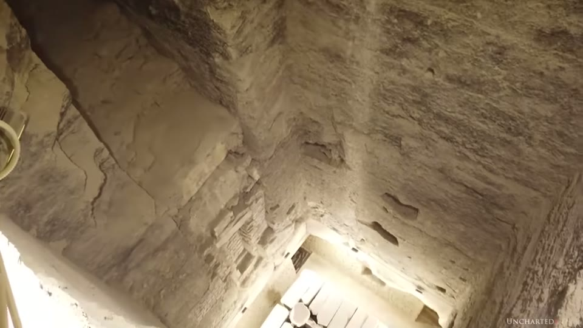
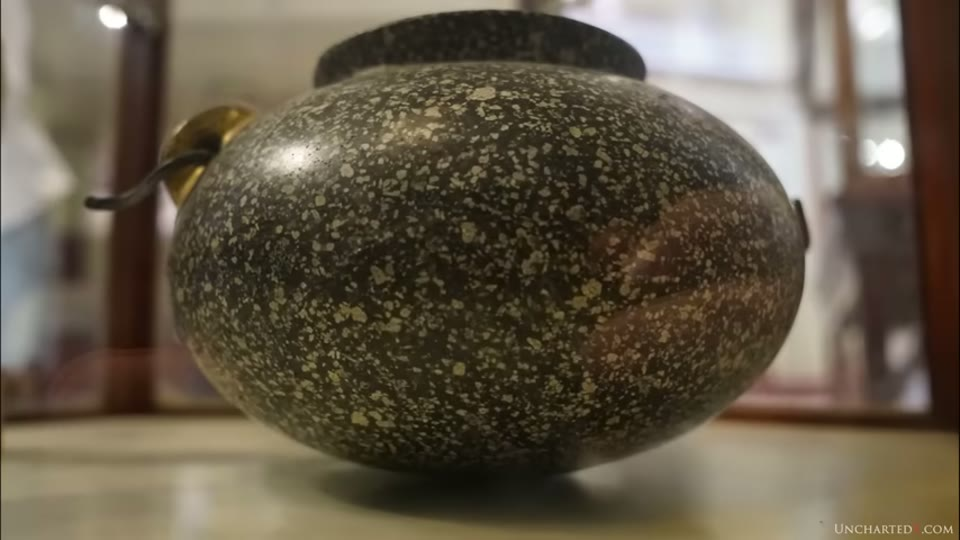
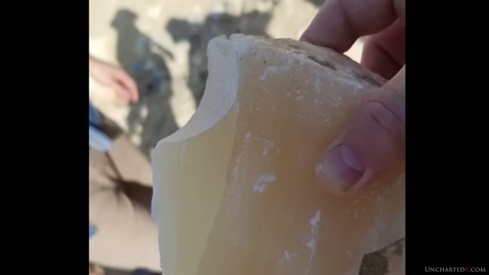

UnchartedX
Incredible Precision Stone Jars, and other unsolved mysteries of Saqqara!
Ben van Kerkwyk · 52 min · watch on YouTube · summarised 2026-10-05
The argument is about the gap between what is above the ground at Saqqara and what came out from under it. The video runs through the Step Pyramid and the shaft beneath it, the tunnel system, the jars found in those tunnels, the printed case for lathe work going back to 1883, how the jars are dated, the mainstream explanation and where the presenter says it applies, and a disposal of machined stone behind the pyramid during the recent restoration.
What is under the Step Pyramid
The Step Pyramid is attributed to Djoser of the Third Dynasty, around 2680 BC, and to Imhotep, and is cited as the prototype or first pyramid — one account being that it is stacked mastabas later expanded into the step shape 00:32–01:11. It was closed to the public for roughly fifteen years of restoration, completed in 2019, and is now entered through the Persian tunnel, which is not the original entrance but was dug in later millennia 01:11–01:40.
The structure stands over an open shaft descending about 90 feet or 30 m into the bedrock, with a multi-piece granite box at the bottom labelled as the burial chamber. Nothing was found inside it except granite fragments and the remains of a human foot, carbon dated to somebody who lived centuries after Djoser 01:57–02:24.
Below that chamber are what the video calls literal miles of tunnels — an estimated five miles of tunnels, galleries and chambers, with no one certain how extensive the system is. Early explorers are reported to have run out of caving rope and turned back 02:32–06:04. He also reports claims from locals, naming the late guide Hakim Awyan, of subterranean passages running further and connecting the major sites, so that a man could once walk from Giza to Saqqara underground 06:04–06:23. (That name is inferred from the auto-captions.) The Serapeum is on the same site, and he points to his own multi-part series on it — the Serapeum entry covers the fifth chapter.
The shafts and tunnels were first excavated and documented in the modern era by the French archaeologist Jean-Philippe Lauer, who published from the 1930s, worked on the site for decades, and was responsible for the restoration of the enclosure wall and temple that tourists walk through 07:43–08:16. What he found around and below the shaft was a network of tunnels and galleries, some chambers tiled and decorated by the dynastic Egyptians — and more than 40,000 stone jars buried in the rubble filling the passages 08:16–08:55. A fraction are displayed in the Egyptian Museum; the bulk, he says, are in warehouses and storage 08:55–09:10.


What is directly beneath the Step Pyramid.
His complaint about them is that no modern engineering analysis of these objects has been done in mainstream academic circles, that Egyptologists do not trouble themselves with how they were manufactured, and that they are dated by where they were found or by the few with hieroglyphs scratched into them 09:11–10:02.
What the argument about the jars actually is
The claim is split into two challenges 12:09–12:55. The first is carving the material, which requires a substance harder than what is being carved; there is no evidence of diamond use in ancient Egypt, and he says the striations and tool marks show something cutting the stone rather than grinding at it with abrasive powders. The second, which he calls the more impressive, is the precision, and what guided the tools that produced it.
The materials named are granite, diorite, schist, quartz, porphyry, basalt and corundum, put at 6, 7, 8 and even 9 on the Mohs scale, against a scale topping out at 10 11:44–12:08. The comparison he draws repeatedly is with pottery found alongside them — in Lauer's excavation photographs and in museum cases, primitive pottery displayed next to hard stone jars 10:20–11:18.


The kind of vessel the precision argument is about.
Three specific pieces carry the precision claim 13:00–14:37: a jar so finely balanced as to appear to stand upright on its tip, like an egg on its end; a vase broken in section so the thinness of the wall can be seen; and a bowl from Lauer's hoards turned so well in crystalline stone as to be translucent. He adds that pieces are fully hollowed with long necks and narrow undercut flared openings, so the tools had to work the insides as precisely as the outsides, and that he is not sure such pieces have ever been replicated in schist or porphyry.
The difficulty he states is physical: these stones are brittle as well as hard, many are conglomerates of crystals, so a tool would have to pass from very hard areas into softer stone without cracking the piece, and this gets harder as the wall thins 13:43–14:09.
The vase project on this channel — scanning individual vessels and publishing the files — is covered in the vase scan entry, the further analysis entry and the hard stone vases entry. Two Curious Being videos argue against the precision case directly: the sequence entry, which places the vases in a longer regional sequence and shows an Old Kingdom relief with a cutaway of the tool drawn beside it, and the scan data entry, which takes the precision claim apart using the published scan data of the researchers who made it. Neither is reconciled with this video.
Petrie, 1883 and 1884
The printed case is the backbone of the section, and Petrie's own plate is put on screen with it.
From The Pyramids and Temples of Gizeh (1883), section 132 16:49–18:35: that the principle of rotating the tool was for smaller objects abandoned in favour of rotating the work, and that the lathe "appears to have been as familiar an instrument in the fourth dynasty as it is in modern workshops". One piece from Gizeh, No. 14, shows true turning and not grinding, because the bowl "has been knocked off of its centring, recentred imperfectly, and the old turning not quite turned out" — leaving two surfaces belonging to different centrings and meeting in a cusp, which no grinding or rubbing process pressing on the surface could produce. Fragment No. 15 shows spherical curves that must have been cut by a tool sweeping an arc from a fixed centre while the bowl rotated; for the lip, the centring of the tool was shifted while keeping the same radius. The proof offered is the exact circularity and equality of the curves and the cusp left where they meet, "not at all rounded off as would certainly be the case in hand work".
Two things sit on that scanned page unread. The passage carries its section number, 132, which is what makes it findable in the book. And the plate above it carries its own material key — "…orite. G. Granite. L. Limestone." — which is what the D in the fragment labels "14 D" and "15 D" stands for. The fine concentric striations drawn across fragment 14 are the only tool marks put on screen anywhere in this video.

The 1883 published source for the lathe argument.
From his 1884 address to the Anthropological Institute of Great Britain and Ireland 18:36–21:17, with figures: in the British Museum, a narrow-necked polished vase in diorite — "or rather in transparent quartz with veins of hornblende" — with a neck 0.05 of an inch thick; a large syenite vase turned thin inside and out; and a diorite bowl six inches in diameter and 1/40 of an inch thick over its greatest part, thicker at the edge to strengthen it, where a small chip shows the thinness, "no stouter than thin card". The fragment he worked out in detail was turned as a segment of a sphere with a radius of 3.94 inches, after which the centre of the tool was shifted 0.5 inch higher and 0.7 inch out of the lathe axis and a fresh arc struck, cutting the raised lip. Petrie states his method: "all of these details have been worked out from very careful measurements of this piece, using successive templates of slightly varying curves."
The same Petrie lathe passage is read out in the precision entry, which is why those two videos share about 2.5 per cent of their words — a quoted source in common rather than reused narration.
Dunn on the same fragments
Christopher Dunn examined the same diorite fragments, which are in the Petrie Museum in London, and is quoted at length from Lost Technologies of Ancient Egypt 21:18–28:02.
The observation he adds is one Petrie did not discuss: a radial gouge on the concave side of the potsherd, opposite the convex surface Petrie illustrated. Dunn suggests it may be the result of the material shifting on its axis, the tool plunging in and knocking the bowl off axis, and that it carries the impression of the geometry of the tool bit. He takes its existence as proof of Petrie's contention that the surfaces were made with a single-point tool rather than rubbing with abrasive. He also raises the possibility of two tools working at once, inside and outside, pushing the bowl against its chuck until the stone broke.
The argument he builds from it is about power 25:11–27:06: what kind of power was behind the lathe to let a single-point tool cut a gouge so deep that the stone failed. "The forces implied with this simple potsherd are not the forces associated with a potter's wheel, or a spindle lathe that is spun via the manual push and pull of a strong bow. If a manually operated lathe met such resistance, it would come to a stop." To argue manpower alone, he says, would be to argue the operator acquired a lever and made a conscious decision to ruin the work. Dunn also reports running a finger across the dished stone and finding smooth machined surfaces with no dips or high spots, and closes with a challenge: "Is anyone today willing to take on the fabrication of an Apis bull box?" The boxes he means are in the Serapeum entry; the statuary he names is in the Tanis entry.
A contradiction is then stated: Egyptology dates these objects to the Old Kingdom but does not credit the Old Kingdom with the wheel, there being no evidence for it outside these artefacts — not in the writings, not in the tools found, and chariots of the period using sleds 28:02–28:43. From that he draws two possible answers: either they had far more capability than they are credited with, or they did not make them 28:56–29:23. The timeline that question sits inside is the Old Kingdom timeline entry.
How the jars are dated
Two sources, he says: the context in which they were found, and any writing on or around them 29:44–30:03.
On the writing 30:04–31:49: the jars are perfectly finished, often symmetrical, polished to a very fine surface — and the hieroglyphs on them do not share those characteristics, being crude, "as if it was roughly hammered into the surface", the result of hand tools like flint chisels. If you can carve and polish stone to that standard, including inside sharp angles, the question he puts is why you cannot do it for the writing. The same mismatch between a finished object and the writing cut into it is the central observation of the middle pyramid entry, where it is made about statuary.
On the context 31:51–32:22: more than 40,000 jars under the Step Pyramid, some in chambers with writing on the walls, which firmly places the burials to Djoser's time — "no doubt that reflects the time that these were interred underground, even if it can't speak to the date of manufacture."
Three objects are then used against the context method.
The schist disc from Prince Sabu's tomb 32:30–34:27. Housed in the Egyptian Museum and moved around often; called a decorative vase by the museum; carved from a single piece of schist, found broken and repaired in modern times. It came from a First Dynasty tomb sealed some 600 years before Djoser, around 3100 BC. He notes that independent researchers have tried to recreate it and study its shape for functional properties, that its central hole "does conjure up images of its spinning or being some component of a larger machine", and then separates that from what he will assert: "now whether you think this was functional or not, I think we can all agree that it is an incredible bit of stone masonry." The disc is unmarked, so the First Dynasty date is, he argues, the latest possible date for manufacture, not the date of manufacture.

The object used against dating by context.
A machined tube of lapis lazuli with a gold sheath 35:38–36:28, labelled simply pre-dynastic and displayed in a cabinet with potsherds, bone ornaments and other late Stone Age objects — presumably, he says, because that was the context it was found in. He adds that he does not think there is a source for lapis in Egypt.
Toshka 36:29–37:25. In the Nubian Museum at Aswan, Yousef Awyan pointed out records from the 1960s excavation of a site now underwater since the Aswan Dam. Human remains and stone vases were found together, and the organic remains were carbon dated to around 12,000 to 14,500 years — roughly 10,000 years before the dynastic civilisation. (The name is inferred from the auto-captions.) The Younger Dryas framing he puts around that figure is the subject of the myths and Younger Dryas entry.
A fourth argument is added from use 38:13–39:01: some jars were used as canopic vessels, and none seem to have been found with stone lids — clay or pottery lids were made to seal them, and those lids are on display. His question is why a civilisation able to make tens of thousands of such jars could not make lids to fit them.
The mainstream explanation, and where he says it applies
Here the accepted account is stated in full before it is answered 39:07–41:22.
The response he engages with is that the Egyptians showed us how they made them, in a scene drawn on a wall. He grants it: "yes, this is true, one such scene does exist and has been preserved down to our time", on display at the Saqqara museum, labelled "scene of stone vessel making", showing people using what look to be weighted hand tools to carve jars.


The accepted explanation, and what is displayed beside it.
His qualification is about material. Looking at the jars around that scene and others displayed at Saqqara: they do not have the symmetry, geometry, sharp edges or card thinness of his earlier examples, many appear roughly finished or lopsided, and — the figure the section turns on — most are made from alabaster, which he puts at 1.7 on the Mohs scale, easily worked by flint and even copper chisels, "a very far cry from the 7, 8s and 9s" of the material the perfect jars are made from 40:14–40:46.

The material most displayed Egyptian stone vessels are made from.
What he concludes from the pairing is imitation and reverence: that the ancient Egyptian artisans knew what they were looking at in the vessels they inherited, and sought to imitate them with the tools of their time, in alabaster or limestone, with results he calls still quite beautiful but not the same as what is wrought in granite, basalt, porphyry or diorite 40:46–41:22. He notes that Lauer found the jars among the ruins of much pottery and softer material, that the Egyptians of course made their own vessels, and that Dunn mentions the god Khnum said to have moulded everything on his potter's wheel. His summary is that there are two classes of object observable at the site 42:02–42:30.
The test he proposes 42:32–43:35: get a lump of diorite and recreate one of these objects with only the tools claimed, with the difficult characteristics acknowledged — "make this jar one that can stand on its tip, or make a long-necked vase from porphyry with the thickness of a playing card, and then I'll concede that you're on to something." He points to Christopher Dunn's four-point test, says he thinks experimentation is a good thing and hopes people continue, and states that despite claims the test has not yet been satisfied.
The alabaster taken out from under the pyramid
The last site section is a disposal 43:52–44:55. During the fifteen years of restoration, something like 50 to 80 tons of machined alabaster was removed from the chambers and passages below the structure, brought to the surface, piled behind the Step Pyramid, bulldozed into rubble and buried. There is a scree field behind the pyramid that they are walking on in the footage, and in a few minutes they find chunks with machined surfaces and others with tubular drill holes. His own position on it is stated as ignorance twice over: "why this was done I have no idea", and "I really don't know specifically where all this white quartzite or alabaster came from beneath the pyramid, nor why it was removed."

What is in the spoil heap behind the pyramid.
Tube drills and the holes they leave are the subject of the tube drills entry and its sequel.
The structure over the shaft
The comparison he closes the site argument on 45:21–46:24: the Step Pyramid is a crude construction of limestone blocks, not very large nor precisely fitted, with mortar between them, and reinforced with wood — some of it modern restoration, some original beams of acacia or perhaps cedar most likely from the region of modern Lebanon. That wood, he says, was among the first organic material ever radiocarbon dated, and the results place the structure in the Old Kingdom. Radiocarbon programmes run on Giza mortar, and what they returned, are the subject of the radiocarbon entry.
From that he puts the question of whether the structure was made by the same builders responsible for what is beneath it, and gives his answer with a label attached: inheritance, renovation and reuse — "of course this is all just speculation, I can't say that I know any of this for sure" 46:24–46:45. What he says he is convinced of is that the orthodox story of the earliest part of human history in the region does not make sense in light of the evidence 46:45–47:12.
The closing frame is the Younger Dryas, a Y-chromosome bottleneck he says shows many people dying suddenly in that period, and a thought experiment: if it happened again, a civilisation rising from the ashes a couple of thousand years later would find the Hoover Dam, Mount Rushmore, the Panama Canal and probably the pyramids, and would have to decide whether they were all one civilisation 47:28–49:46.
What you can check yourself
- Petrie's two publications. The Pyramids and Temples of Gizeh (1883) carries the quoted passage at section 132, with the numbered fragments and the plate; the 1884 address to the Anthropological Institute is a separate published text. The measurements — 0.05 inch, 1/40 inch, a 3.94 inch radius, a shift of 0.5 and 0.7 inch — are stated figures 16:49–21:17.
- The fragments themselves. Petrie's numbered pieces are in the Petrie Museum in London, in a display case, which is where Dunn says he examined them 21:28–21:36.
- The vessel-making scene. It is on display at the Saqqara museum and can be looked at, along with the vessels displayed around it 39:21–39:40.
- The hardness figures. Mohs values for alabaster, granite, diorite, porphyry, basalt and corundum are standard published values, and the video's claim turns on the gap between them 11:44–12:08, 40:23–40:35.
- The lids. Whether stone jars of this kind have been found with stone lids, and what the displayed lids are made of, is a museum-floor question 38:13–38:45.
- The Sabu disc's provenance. A First Dynasty tomb attribution is a published archaeological record 33:24–33:40.
- Toshka. The 1960s excavation and its radiocarbon dates are published work, independent of anything else in the video 36:36–37:05.
- The scree field behind the Step Pyramid is on the ground at Saqqara and the pieces in it can be picked up 44:20–44:40.
What the video does not settle
- No measurement is taken anywhere in it. Every precision figure quoted is Petrie's or Dunn's. No vessel is measured, scanned or gauged on camera, and the roundness, symmetry and wall thickness claims rest on what the objects look like in a display case.
- "Stands on its tip" is not demonstrated. In the footage the jar sits in a case on its narrowed base, and museum mount clips are in contact with its body on both sides, so whether it would stand unaided cannot be seen 13:04–13:17.
- The quoted museum label is never shown. The words "scene of stone vessel making" are read out while the camera stays on the relief; no label appears in frame 39:28–39:40.
- The 1.7 Mohs figure for alabaster is given without a source. It is the number the whole mainstream-explanation section turns on 40:23–40:35.
- The lopsidedness is asserted over vessels that do not obviously show it. The viewer is asked to look carefully at the jars around the scene and see roughly finished, decidedly lopsided work; in the frames held under that line the vessels read as fairly regular, the one visible irregularity being an uneven rim on the largest. No two pieces are compared side by side and no measurement is offered 39:50–40:20.
- The material removed from under the pyramid is named two ways. It is called machined alabaster and then "white quartzite or alabaster", and the presenter says he does not know which, where it came from, or why it was taken out 43:58–44:55.
- The disposal is reported without a source. No permit, report, photograph of the removal or statement from the restoration project appears; the evidence shown is the scree field and the pieces found in it.
- The Sabu disc is substantially restored. Large areas of the surface differ in colour and texture from the rest, consistent with the reconstruction the narration mentions — so the shape researchers work from includes filled material. No conservation record is shown 32:40–33:30.
- Nothing dates any jar. The argument is that the context dates deposit rather than manufacture; no independent dating method for stone vessels is offered, and the Toshka figures date organic remains found with vases, not the vases.
- The tool-mark claim is asserted, not shown. Striations and tool marks are said to demonstrate cutting rather than grinding; no close-up of a striation on any jar appears in this video, and the only tool marks put on screen are in Petrie's drawing of fragment No. 14 12:28–12:47.
- The inheritance conclusion is labelled as speculation by the presenter and the label is his own 46:38–46:45.